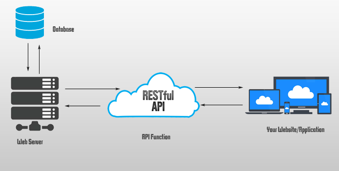
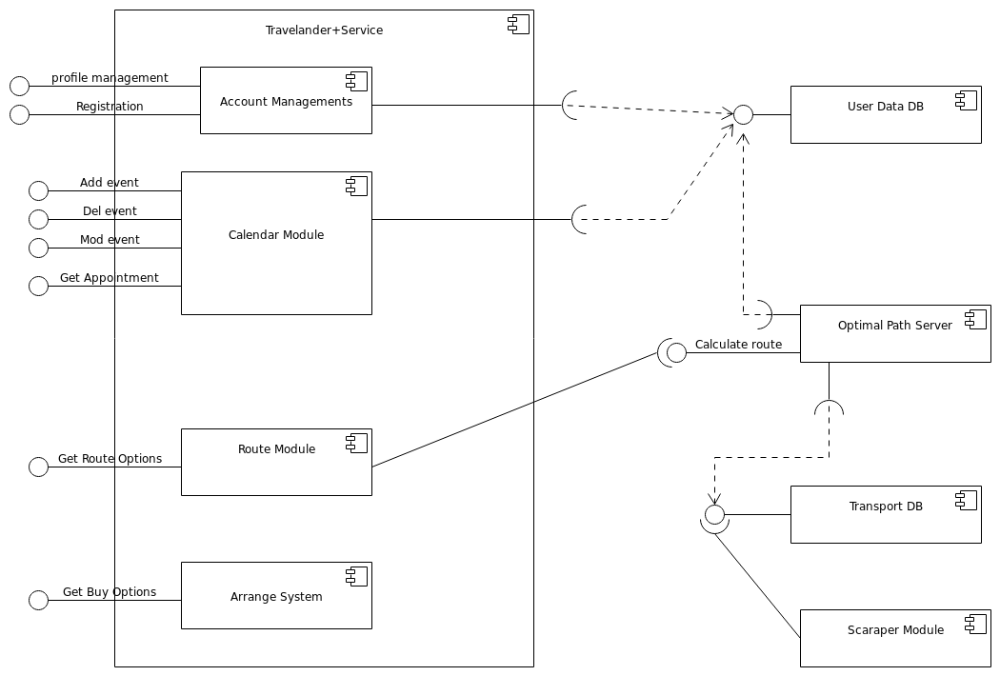
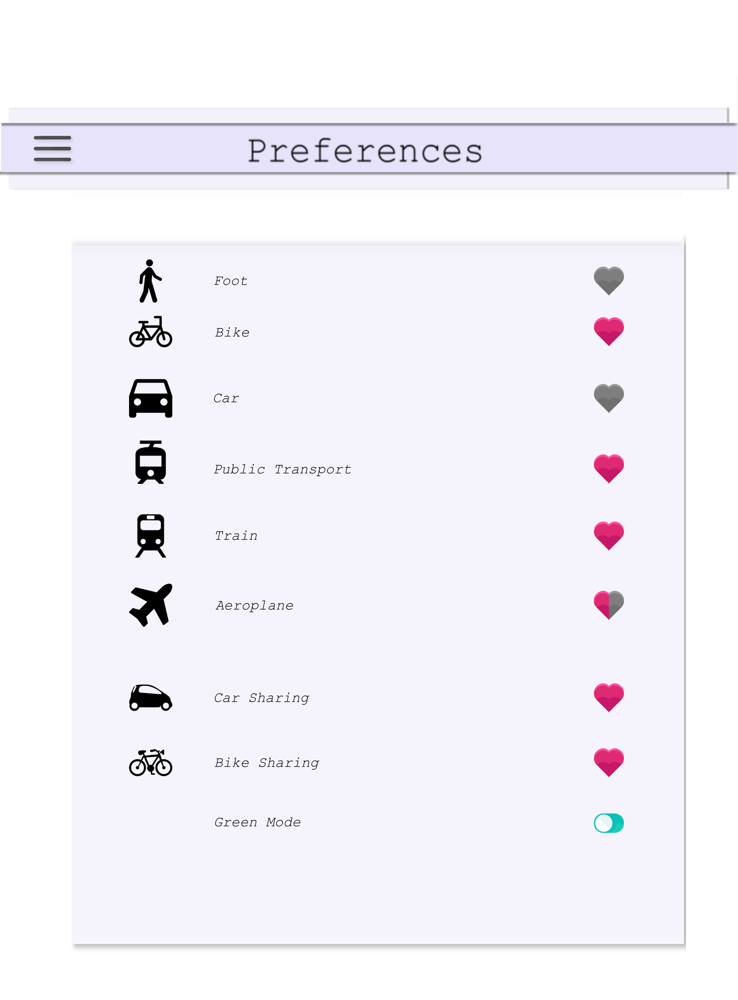
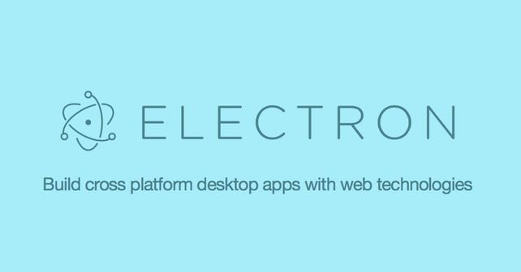
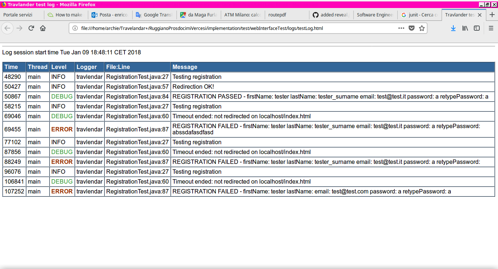

## Software Engineering Project ### Presentation Marco Prosdocimi - Enrico Ruggiano - Giacomo Vercesi <img src="assets/Logo.png" style="max-width: 70%"/> --- # Concept -- ## What is Travlendar+ * Calendar application functionality * Map application which could calculate a best path -- ## Main functionalities * basic calendar function (add/update/delete events) * way to calculate best path * time/geographical data support (using Standards) * ... -- ## Other Specific function * preference system * notification support * specific event * ... -- ## A lot of work to do! -- ## Simplicity So the idea was to develop it as simple as possible. Simplicity is main key value of our project. -- ## Simplicity **Simplicity** => Maintanability => Good Teamwork => Better Result --- # Architecture -- <img src="assets/architecture.png" style="max-width: 70%"/> -- ## Client * Thin * Simple * Cross platform -- ## RestFull  -- ## Server Side  -- ## Optimal Path * RESTful Api * Computes the best routes and the mode of transportations for the given trip * closely cooperates with the scraper module -- ## User Data and Transport DBs * Used for storing persistent data --- # UI -- Particular attenction on the Graphics aspects of the client application to have the best result as possible. Best UI graphics is the key of success in software market. -- **immediate Design** and **an every day application**. * Material Design guidelines. <img src="assets/mdl.png" style="max-width: 70%; border-radius: 50%"/> -- Same graphical layout on every type of different clients => Usability Personal User page and secondary and optional user data => High Customizability -- <img src="assets/Calendar.png" style="max-width: 70%"/> --  --- # Implementation -- # Docker <img src="assets/docker.png" style="max-width: 40%"/> -- #### Docker features: * Scalability * Reproducibility * Application Isolation * Network Simulation * Platform-independent build process -- ### Docker in Travlendar * All the components use a different container * Network-based interaction * Extremely simple to isolate and firewall individual components --- # Frontend -- Travlendar was projected to be easy, simple, UI friendly, client-server application and cross-platforming. Nowday's fashion using Html, Css And Javascript to handle frontend. <img src="assets/frontend.jpg" style="max-width: 70%"/> -- ## And this helped a lot! -- ## Cross-Platforming * Electron: desktop app * Cordova: android/ios/mobile <img src="assets/cordova.jpg" style="max-width: 50%" align="right"/>  -- ## Javascript Comunity vast library and API support. * FullCalendar API. * OpenLayers v3 API. * Material Design lite. -- ## JQuery JQuery we could implement Event-Based design paradigm. <img src="assets/jquey.jpg" style="max-width: 80%"/> -- ## How it Works Html documents are the static layout page which works like a reactive gui. When user permorms some particular actions, Jquery triggers execution of javascript code. -- ## Javascript Code The tasks of javascript frontend code are only two: * modify the layout, changing some html attribute or creating a new child element for example. * start an Ajax calls to the endpoint server to perform a GET or a POST HTTP request <img src="assets/jquery.jpg" style="max-width: 50%"/> -- ## CSS * adjust html layout * blink or fade animation * make responsive the html. <img src="assets/css.png" style="max-width: 20%"/> -- ## Other Javascript Pro * simple write code * dinamical type system. * readability * rarely are exceeded the 100 lines of code --- # Backend -- ## Python * Dynamically type system * Interpreted but efficent * Very easy to use * Vast collection of libraries -- ### Python and RethinkDb <img src="assets/rethinkdb_py.jpg" style="max-width: 48%"/> -- ### Python and Json <img src="assets/json.png" style="max-width: 30%"/> -- ## Flask Is a micro web framework API enpoint -- ```python @app.route('/registration', methods=['POST']) def registration_api(): user = flask.request.get_json() response = registration(user) return response ``` -- ## JsonSchema * Check and validate JSON Post request ```python def registration(json): scheme = load(open("resource/registration.json")) validate(json, scheme) ``` -- #### registration.json ```json { "type" : "object", "properties": { "first_name": {"type": "string"}, "last_name": {"type": "string"}, "email": {"type": "string"}, "password": {"type": "string"} }, "required":["first_name", "last_name", "email", "password"], "additionalProperties": false } ``` --- # RethinkDB -- ### RethinkDB * document-oriented database * natively works with json * multilingual bindings --- # OptimalRoute and Valhalla -- ### Valhalla * OpenStreetMap routing engine * REST Api * Supports car, foot and bike routing -- ### OptimalRoute * 'glue' between routing data/engines * REST Api * Closely interacts with the scraper component via the Transport DB * Lightweight Plugin System --- # Testing Frontend -- <h2> It was not simple! </h2> -- ## Standard Ways * QUnit library <img src="assets/qunit.png" style="max-width: 50%"/> -- ## Test Automation test Automation technique, which is great and widely used for web application * Selenium API -- ## Selenium * is possible to create a 'Marionette' * a 'Marionette' is an artificial user with a programmated navigation behaviour *Perform test to verify the expected update of html after ajax call or jquery modification*. <img src="assets/selenium.png" style="max-width: 50%"/> -- ## Test Java Suit * Selenium Api supported it * jUnit and other usefull java testing libriaries * starting a sistematic test simply executing a jar file <img src="assets/java.jpg" style="max-width: 50%"/> -- ## Html Log  --- # Testing Backend -- ## python test unittest framework -- ```python @classmethod def setUpClass(cls): # code # the tests need login def setUp(self): # code def tearDown(self): # code @classmethod def tearDownClass(cls): # code ``` --- # Other Test -- ## Jmeter * Test Restfull Api <img src="assets/jmeter.png" style="max-width: 100%"/> -- * Perform Post or Get Request * Make an assertion of the response * Suppose the back end work correctly